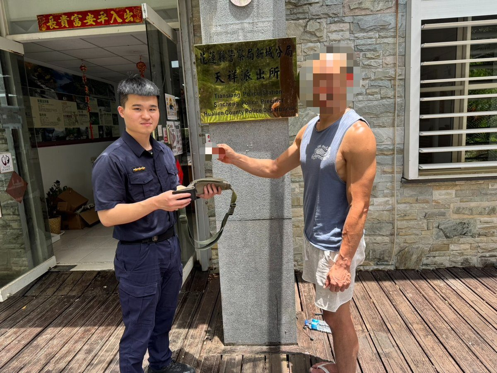
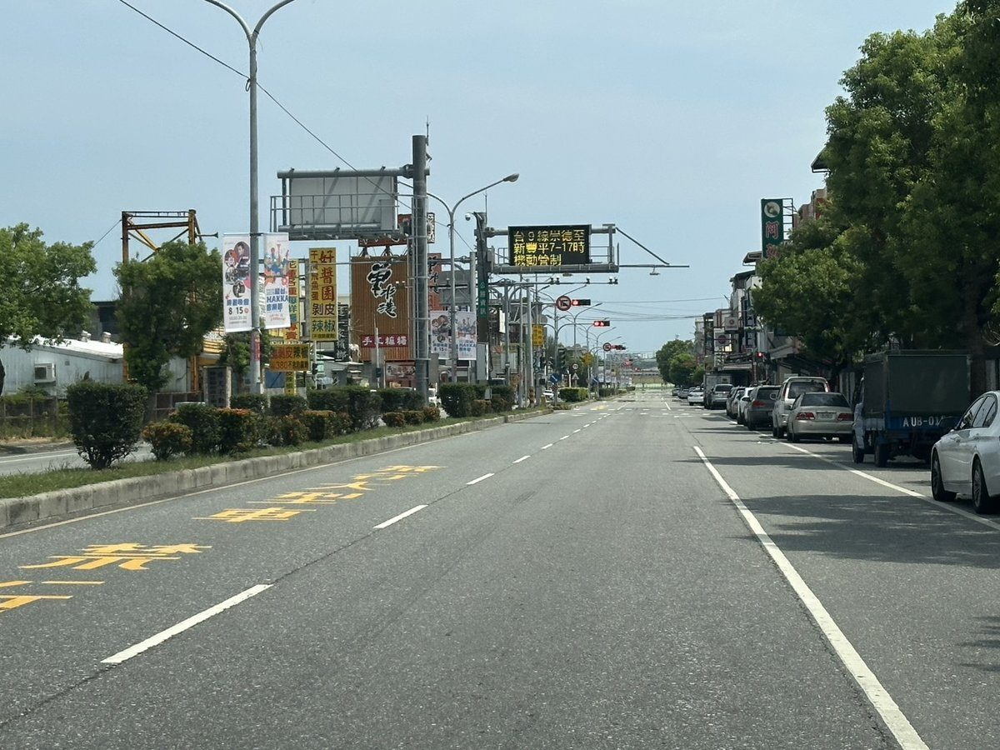
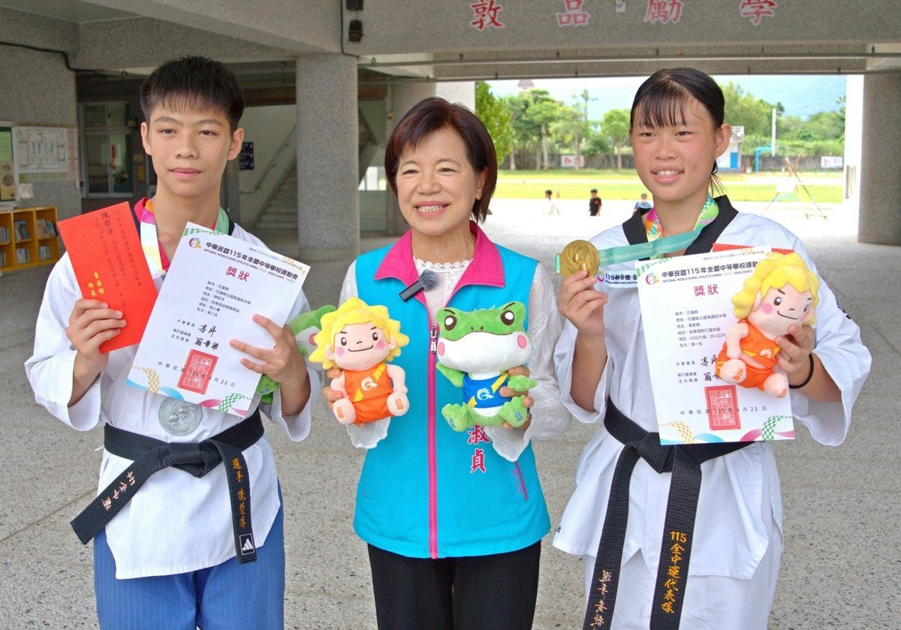
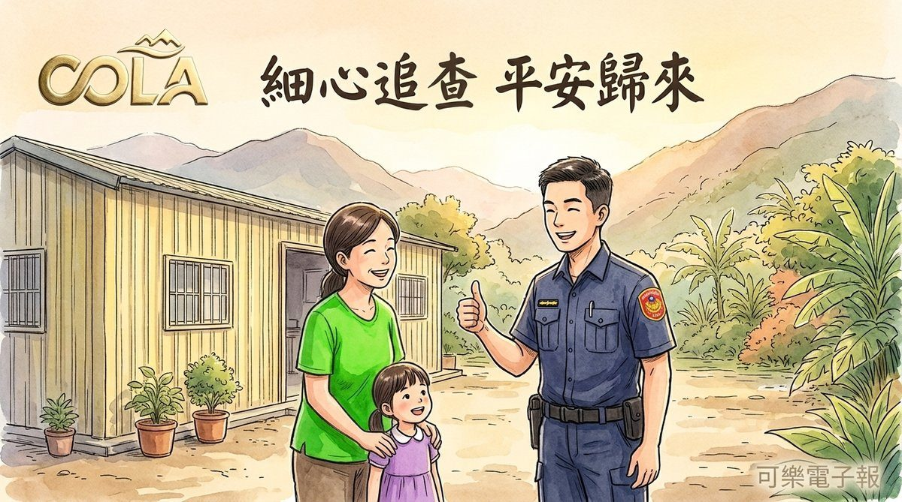

吉安之光！洪基銘全國身障保齡球奪銀 游淑貞親勉勵
吉安鄉北昌村保齡球好手洪基銘，於全國身心障礙國民運動會視障男子組保齡球賽事中勇奪銀牌。吉安鄉長游淑貞親往家中貼紅榜並頒發獎勵金，表彰洪基銘不畏身體限制、突破自我，為花蓮與吉安爭光的卓越成就。…
閱讀全文 →吉安鄉北昌村保齡球好手洪基銘，於全國身心障礙國民運動會視障男子組保齡球賽事中勇奪銀牌。吉安鄉長游淑貞親往家中貼紅榜並頒發獎勵金，表彰洪基銘不畏身體限制、突破自我，為花蓮與吉安爭光的卓越成就。…
閱讀全文 →
國軍退除役官兵輔導委員會主委嚴德發十九日與吉安鄉長游淑貞，前往光華村登門拜訪百歲榮民夏宗澤，聽他細述當年投身花蓮開墾的艱辛歲月，並致贈禮盒致意，感謝他為國家與地方建設的辛勞付出。…
閱讀全文 →
可樂電子報小編/編輯 愛心無界限，善意跨越百里！遠在彰化的「中央聖道院」感念花蓮地方弱勢團體與家戶需求，特別跨 […]…
閱讀全文 →
可樂電子報小編/編輯 強攻扣殺響徹國際賽場！花蓮縣吉安鄉羽球隊小選手日前遠赴海外征戰，一舉在「2026年林丹盃 […]…
閱讀全文 →可樂電子報小編/編輯 聽見救護車急促笛聲，前方車陣卻卡在紅燈動彈不得，想讓路卻苦無空間——這樣的搶道驚險日常， […]…
閱讀全文 →
可樂電子報小編/編輯 暑假還不知道去哪裡溜小孩、陪長輩嗎？為迎接溫馨的「祖父母節」，吉安鄉公所與鄉代會今年特別 […]…
閱讀全文 →
可樂電子報小編/編輯 吉安鄉公所為弘揚慎終追遠的孝道精神並緬懷先人恩德，將於8月22日（農曆7月初十）星期六下 […]…
閱讀全文 →
國民黨於花蓮小巨蛋舉辦團結大會，台北市長蔣萬安為花蓮縣長參選人游淑貞授旗，展現藍營輔選能量。現場集結徐榛蔚、傅崐萁等多位要角，共同誓言延續花蓮發展，朝「五合一全壘打」目標邁進，鞏固基層選票。…
閱讀全文 →
可樂電子報小編/編輯 花蓮縣文化局「115年度藝術下鄉—玩藝列車」巡演，將優質表演藝術 […]…
閱讀全文 →
花蓮慈濟醫院積極拓展國際醫療版圖，舉辦亞太國際醫療研討會，匯聚台灣、印尼、菲律賓、越南等國專家，共同針對癌症治療、中西醫合療及護理照護進行深度交流。此次合作強化跨國醫療能力建立，將「醫療無國界」理念化為具體行動，提升病患…
閱讀全文 →
吉安鄉公所為強化公務人員對職場霸凌與性騷擾的認知，特舉辦「你，職場友善了嗎？」研習。鄉長游淑貞出席並強調落實職業安全衛生法新規定，透過多元性別與DEI理念推廣，攜手打造尊重、溫暖的公務服務團隊。…
閱讀全文 →
吉安鄉長游淑貞積極推動永安村道路修復工程，於地下污水工程完工後，無縫接軌啟動17條重要巷弄的路面刨鋪，總經費達1,061萬元，大幅提升鄉親通行安全與舒適度，並已規劃第二期工程。…
閱讀全文 →
吉安鄉里漏部落舉辦文化傳統競技與年齡階層培力工作坊，吉安鄉長游淑貞與族人見證新年齡階層rara’u成軍，透過技藝實作與競技展現南勢阿美族文化生命力。…
閱讀全文 →
參與Hualien REAP Forum 2026的國際專家團隊參訪花蓮慈濟醫院，交流人道救援、iDMAT災難應變系統、醫療無人機及中西醫合療創新，MIT教授深感啟發。…
閱讀全文 →
台北胡姓街頭藝人在花蓮晶英酒店前遺失腰包，幸獲熱心民眾拾交天祥派出所。警員蔡名傑迅速比對資料聯繫失主，短時間內完好歸還現金與證件，展現溫暖警民情。…
閱讀全文 →
花蓮縣2026城鎮韌性防空演習12日舉行，新城警分局精準部署警力與民防夥伴，全面執行交通管制與人車疏散避難，30分鐘內完成街廓淨空，有效提升全民防衛與應變能力。…
閱讀全文 →
花蓮吉安鄉國風國中跆拳隊在全國中等學校運動會上表現出色，榮獲跆拳道一金一銀佳績。吉安鄉長游淑貞親赴校園張貼紅榜，並頒發獎勵金，肯定選手黃歆雅、陳哲洋與教練團的辛勞與卓越成就，展現吉安鄉對在地體育人才的長期支持與鼓勵。…
閱讀全文 →
吉安鄉好客藝術村推出「眼界之外」攝影聯展，由花蓮縣攝影學會呈現43件精采作品。鄉長游淑貞邀鄉親至吉野藝文館，透過影像探索花蓮山海人文與時代記憶，感受攝影藝術魅力。展期至8月30日，體驗光影盛宴。…
閱讀全文 →
花蓮新城警分局成功協助一對失聯一週的母女平安返家。因手機故障與交通問題導致無法聯繫，家屬心急報案，警方運用科技與積極查訪，最終在吉安鄉尋獲。此案凸顯保持聯繫的重要性與警方的守護力量。…
閱讀全文 →
吉安鄉立幼兒園舉辦「泡泡魔法王國」歡樂開學活動，鄉長游淑貞親自送上祝福，並與幼兒一同參與泡泡魔法秀及闖關遊戲。透過遊戲與探索，培養孩子學習興趣與班級向心力，為新學期注入活潑能量，展現吉安鄉對幼兒教育的重視。…
閱讀全文 →